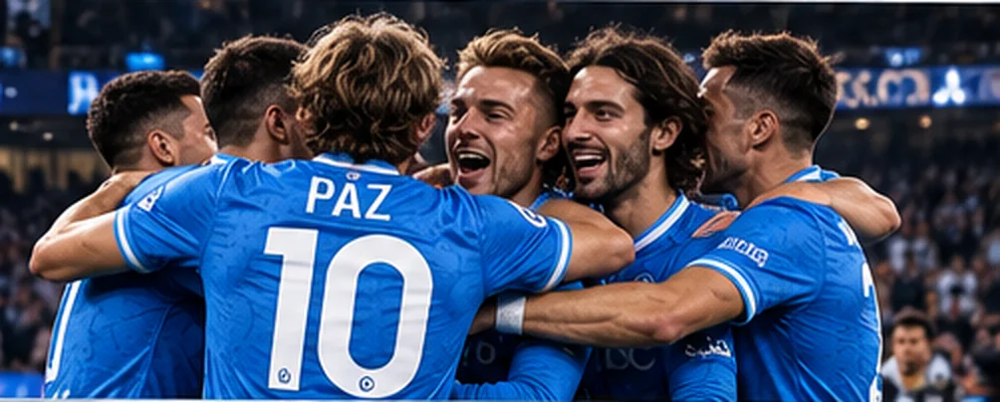

SERIE A · NAPOLI 3–1 TORINO
MOORE BREAKS THE DEADLOCK AGAIN: NAPOLI SEE OFF TORINO 3–1
Pio opens from Zaïre-Emery's pass, Sazonov levels just before the interval, then Moore and Beier strike to make sure Napoli's European response carries into Serie A.
Read the match report →